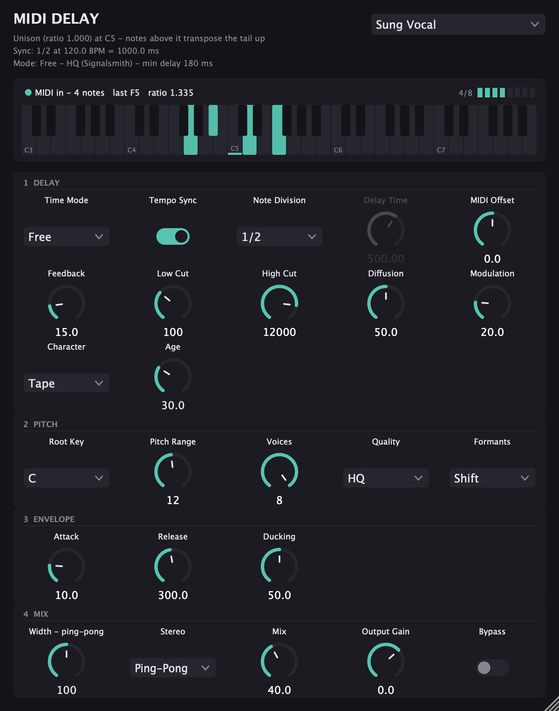

MIDI Delay
A delay whose echoes sing the notes you play.
Free VST3 and AU plugin for macOS and Windows. No account, no license key, no trial.

What it does
Put MIDI Delay on a vocal, or on any sound, and play notes into it. Every note starts its own echo, transposed to that note. The vocal stops repeating itself and starts repeating your melody.
- Pitch from the note, loudness from velocity, length from note length. Up to eight notes at once.
- Two ways to play it. Free: a real delay, the melody comes back after the echo time. Follow: the melody sings along with the vocal at the same moment.
- Two pitch engines. Fast, a light varispeed; and HQ, based on Signalsmith Stretch, with formant control.
- Tails that sit in a mix. Feedback, low and high cut, diffusion, modulation, ducking, tempo sync, ping-pong and a tape character.
- Six presets to start from: Chord Pad, Arp Echo, Octave Drop, Ghost Choir, Sung Vocal, Dense Rap.
Download
MIDI Delay 0.1.0 is not released yet. The buttons open the releases page on GitHub, where the first build will appear. No sign-up needed to download.
macOS
macOS 11 or later, Apple Silicon and Intel. VST3 and AU, one installer.
The installer is not signed by Apple yet, so macOS will refuse to open it the first time. Open System Settings → Privacy & Security, scroll down and click Open Anyway. After installation the plugin loads normally.
Windows
Windows 10 or 11, 64-bit. VST3.
Copy MIDI Delay.vst3 into C:\Program Files\Common Files\VST3
and rescan plugins in your host.
Get release news
An email when MIDI Delay is released, and when the next Berg plugin comes out. Rarely, and nothing else. Optional: the download never asks for it.
You will get one email to confirm. Addresses are stored by Kit and used only for these emails. Every email has an unsubscribe link.
FAQ
Is it really free?
Yes. No account, no license key, no time limit, no features held back. MIDI Delay is the first Berg plugin, and it is free so that people can find out what Berg makes.
Which hosts does it work in?
Any host that loads VST3 or AU effects and can send MIDI notes to an effect. Tested so far: FL Studio 20.8 on macOS, VST3.
Logic Pro, Ableton Live, Reaper, Studio One and FL Studio on Windows are not tested yet. They are expected to work, but I have not checked them, so I do not promise it. If you try one, a short report on GitHub helps a lot.
How do I send MIDI to it in FL Studio?
- Put MIDI Delay in a mixer slot on your vocal track.
- Add a MIDI Out channel in the Channel Rack and set its Port, for example 18.
- In the plugin window open the wrapper settings (second icon from the left) and set MIDI Input port to the same number.
- Draw notes in the piano roll of the MIDI Out channel and press Play.
While no notes arrive, the plugin says so in its own window.
Which operating systems?
macOS 11 or later on Apple Silicon and Intel (VST3, AU), and Windows 10 or 11, 64-bit (VST3). Tested on macOS 26. The Windows build is compiled and passes automated tests on every change, but has not been tried in a host on a real Windows machine yet.
Why no Linux?
I have no Linux machine to test on, and a plugin nobody tested is how someone's project crashes. A Linux version is not planned for now.
Why no AAX for Pro Tools?
AAX needs a separate developer agreement and signing with Avid. Not planned for now.
Does it add latency?
In Free mode, no: the plugin reports zero latency to the host, and the pitch engine's own delay is hidden inside the echo time. That is why the shortest echo in HQ quality is 180 ms. Follow mode, where the melody plays together with the vocal, asks the host for latency compensation.
I found a bug. Where do I report it?
On GitHub: github.com/berg-creator/midi-delay/issues. Please include your host and its version, your OS, and what you did right before it happened.
Berg is one person. Reports are read, and crashes and wrong notes come first. There is no guaranteed reply time, and feature requests may wait a long time or not happen at all.